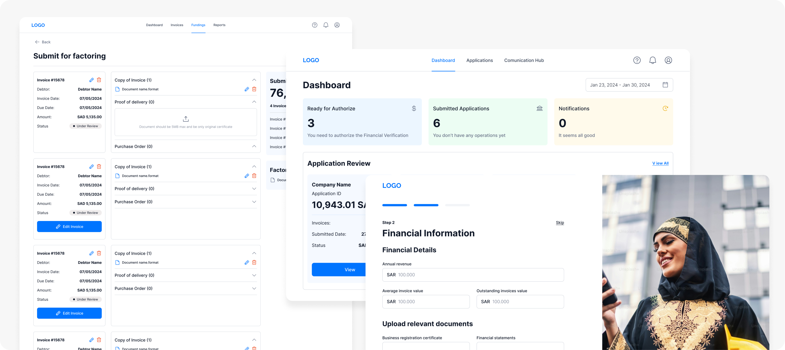
Factoring Platform MVP: Research-Driven Design
Background
A Saudi Arabian startup aimed to launch the country's first factoring platform — helping SMEs improve cash flow by selling invoices for immediate funding. The founding team had deep banking expertise and a defined technical scope, but needed comprehensive UX research and design to validate assumptions and create user-centered experiences within an aggressive 5–6 week timeline.
The Challenge
Design an MVP for a first-of-its-kind financial platform from scratch: no local competitors to reference, a new market, complex multi-stakeholder workflows spanning 16+ steps, and part-time capacity of 4 hours/day due to a concurrent full-time project.
Overview
Lead UX Designer
UX Researcher
December 2023 – January 2024
(5–6 weeks)
FinTech / Factoring (Saudi Arabia)
Lead Designer (me), Senior UI Designer, Product Manager
My Design Process
As the lead designer, I drove the complete MVP development from user research through final delivery, collaborating closely with the product team to validate assumptions and prioritize features that addressed real user pain points.
Research & Discovery
- Competitive analysis of international factoring platforms
- Market segmentation identifying 4 distinct SME categories
- Stakeholder workshops with the founding team
- Desk research on Saudi business practices and regulations
SMEs face severe cash flow challenges due to 60–90 day payment terms. Traditional bank financing is slow and often unavailable to smaller businesses. Trust and transparency are critical — users fear hidden fees and opaque processes. Different business types need different features
Define & Strategize
Mapped the 16-step business process to user-facing features, defined MVP scope vs. post-MVP, prioritized 11 system epics, and created user flows for all major processes.
Design & Prototyping
I owned the complete UX architecture, all wireframes, and research deliverables. A Senior UI Designer executed the visual identity and high-fidelity UI under my direction — I ran daily syncs, provided detailed feedback, and approved all work before client presentation.
Validation
Weekly stakeholder presentations with research artifacts. Defended design decisions using persona and journey map data. Incorporated feedback while maintaining UX best practices.
Design Solutions
Based on user research and competitive analysis, I designed solutions addressing the three most critical user needs that would form the foundation of our MVP:
Registration & Onboarding
Automated data fetching via Saudi government systems, multi-step verification, AML-CTF compliance checks, and clear progress indicators.

Application Submission
Guided invoice upload with validation, document checklist, real-time funding estimate, support for multiple document types.
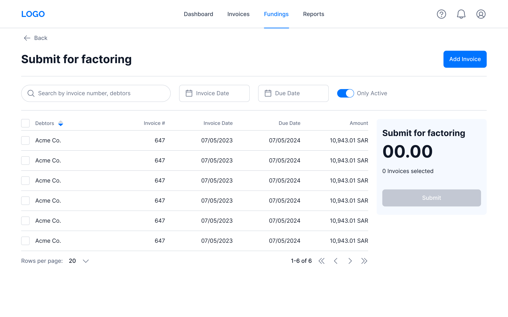
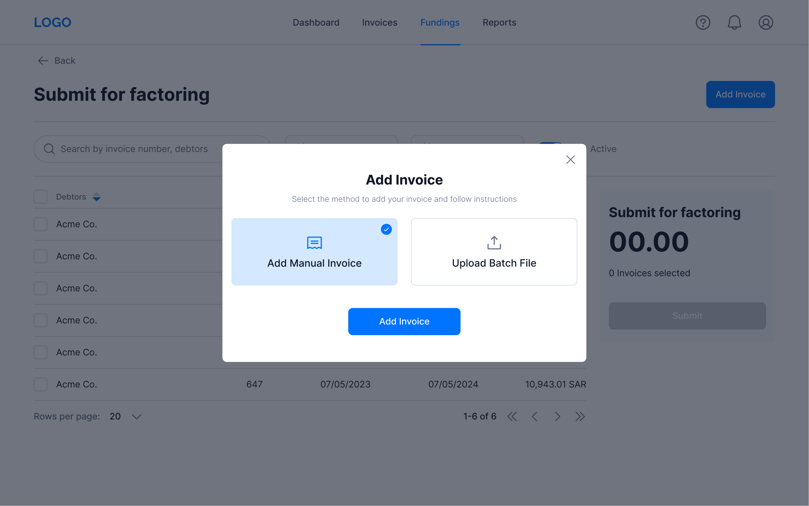
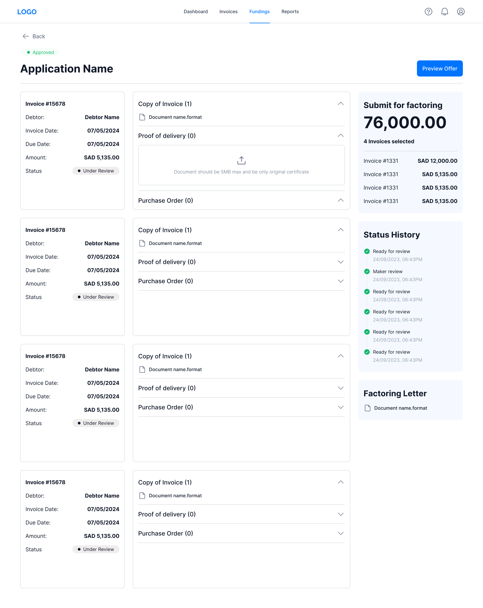
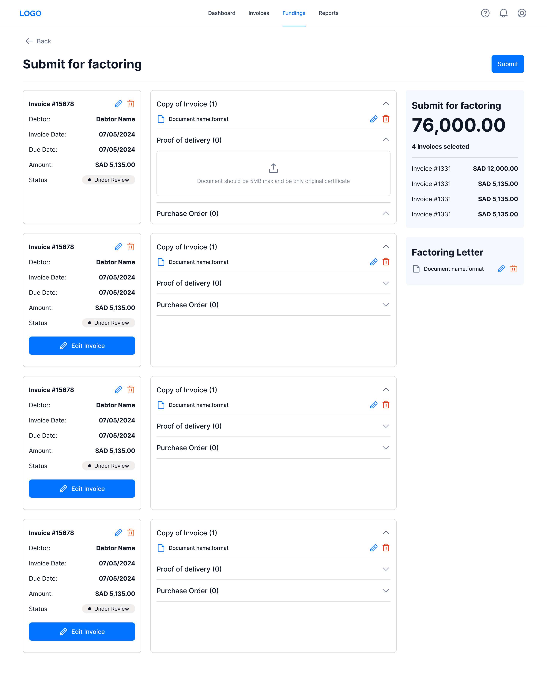
Multi-Stage Approval Workflow
Transparent status tracking so applicants always know where their request stands. Role-specific interfaces for Analysts, Auditors, and Senior Approvers.
Maker's Dashboard (SME applicant view)
Different Backoffice Roles Approval Workflow Screens
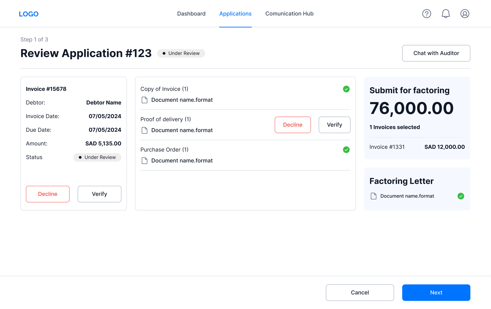
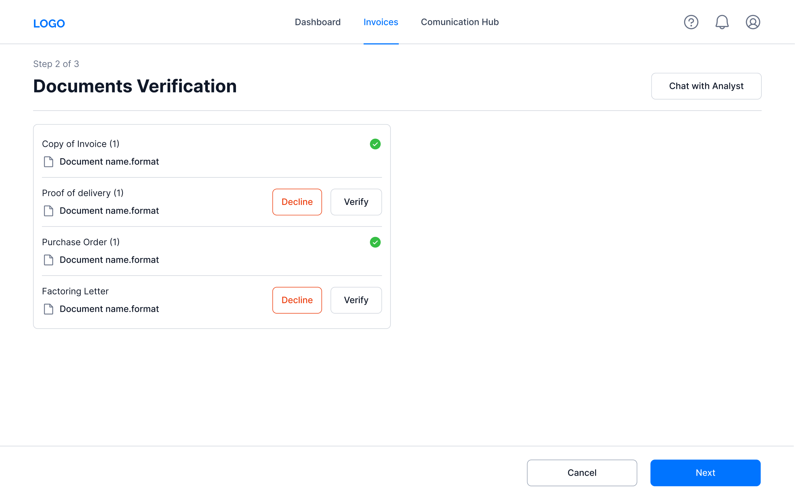
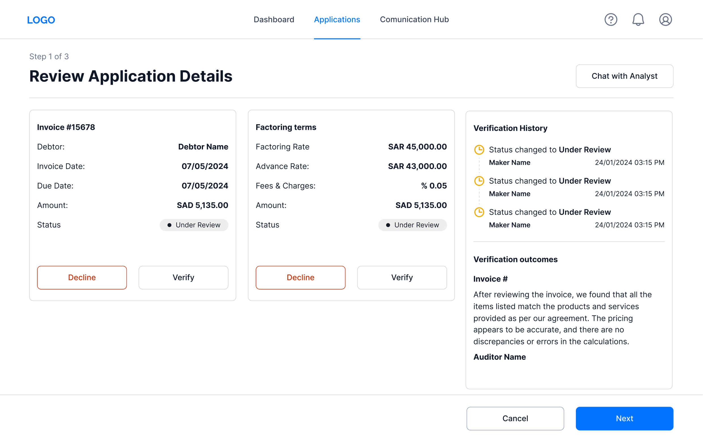
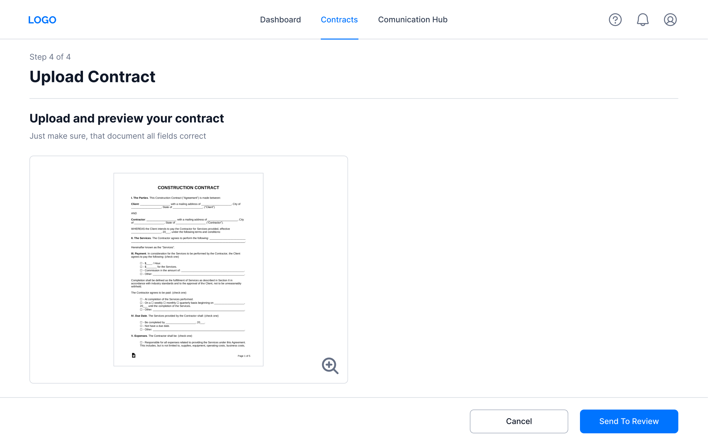
Key Design Decisions
Transparent approval workflow
Instead of black-box processing, designed visible step-by-step status tracking — directly addressing the trust concerns identified in research.
Role-based dashboards
Analysts get request queues and verification tools; applicants get funding status and document management. Different users, different views, same system.
Simplified invoice submission
Upload-and-validate flows with auto-population from business registration systems, reducing friction for time-pressed SME owners.
Research Foundation
12 Personas
4 Segments
Saudi SME Owners (primary):
Cash flow gaps limiting inventory; need modern, intuitive interfaces.
Accounting Professionals: Managing multiple client receivables; need advanced reporting and integrations.
Small Business Advisors: Need analysis tools and collaboration features.
Online Marketplace Sellers: Unpredictable cash flow from delayed payouts; need e-commerce integration.
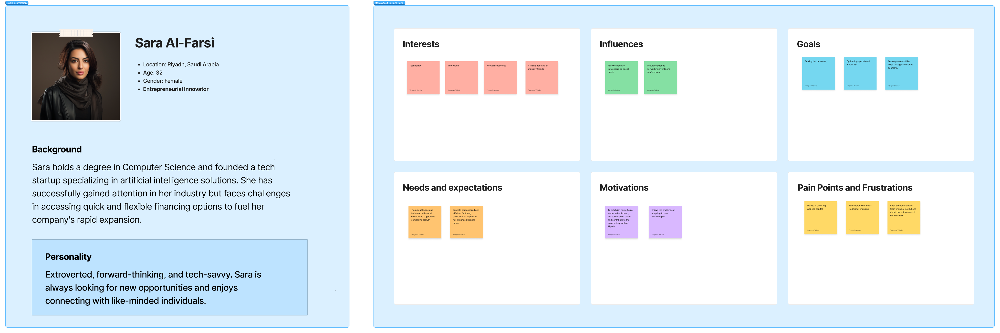
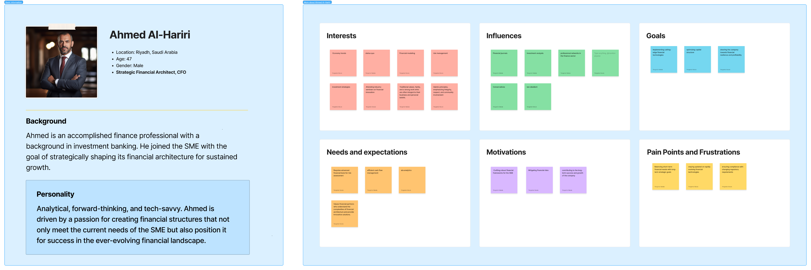
Customer Journey Mapping
Dual maps for Sellers and Buyers across 8 stages. Key pain points: fear of hidden fees, complex documentation, lack of visibility during review, contract complexity. Each mapped to a concrete design solution.
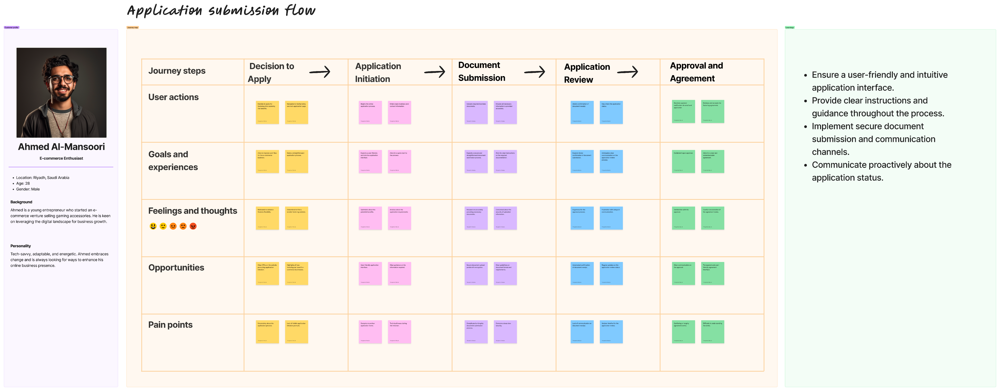
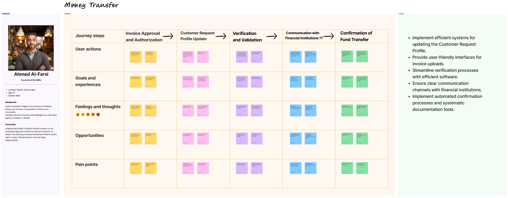
Impact & Results
Deliverables:
Also included UI kit, logo, documentation
Client Success:
Key Challenges Overcome
Part-time capacity with full deliverables
Proposed adding a second designer, structured parallel workstreams, front-loaded research in Week 1.
Unfamiliar market
Extensive desk research, structured workshops with the client's banking team, broad persona set to avoid missing segments.
Complex financial workflows
Exhaustive user flows, role-specific views, plain-language summaries for legal content, comprehensive JTBD framework.
Aggressive timeline:
Detailed roadmap from Day 1, weekly client presentations catching issues early, strict MVP prioritization.
Core competencies demonstrated
Comprehensive research informing product direction under tight deadlines
Team coordination, stakeholder management, final approval on all UI
Simplifying 16-step financial processes for diverse user roles
Structuring multi-role systems into intuitive experiences
Creating experiences for Saudi Arabian business culture
Articulating research insights to decision-makers weekly